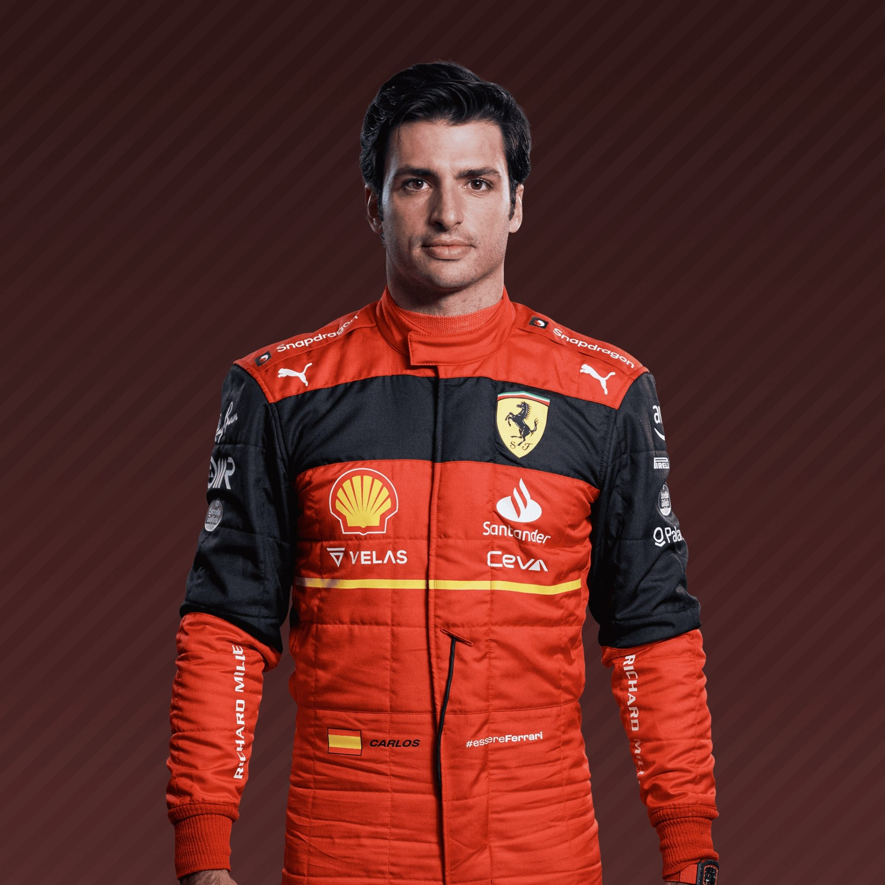
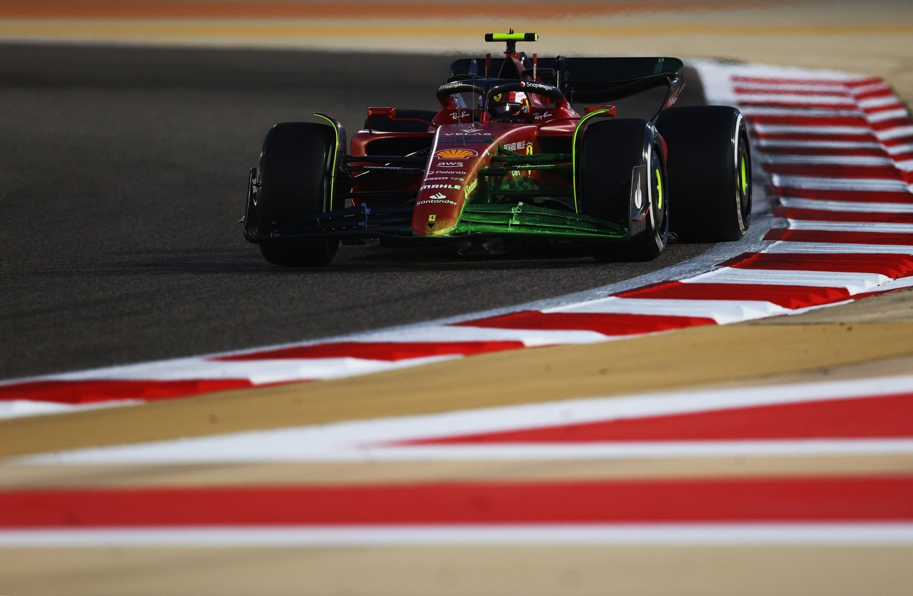
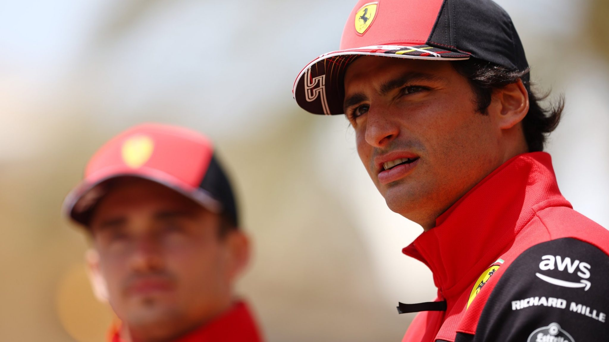
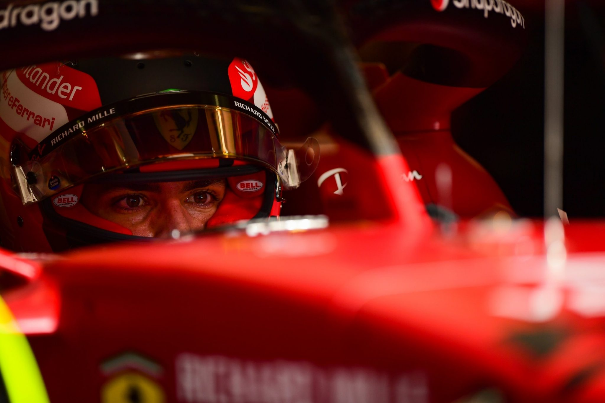
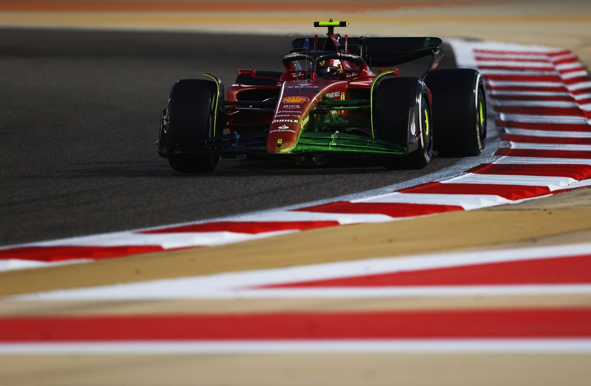
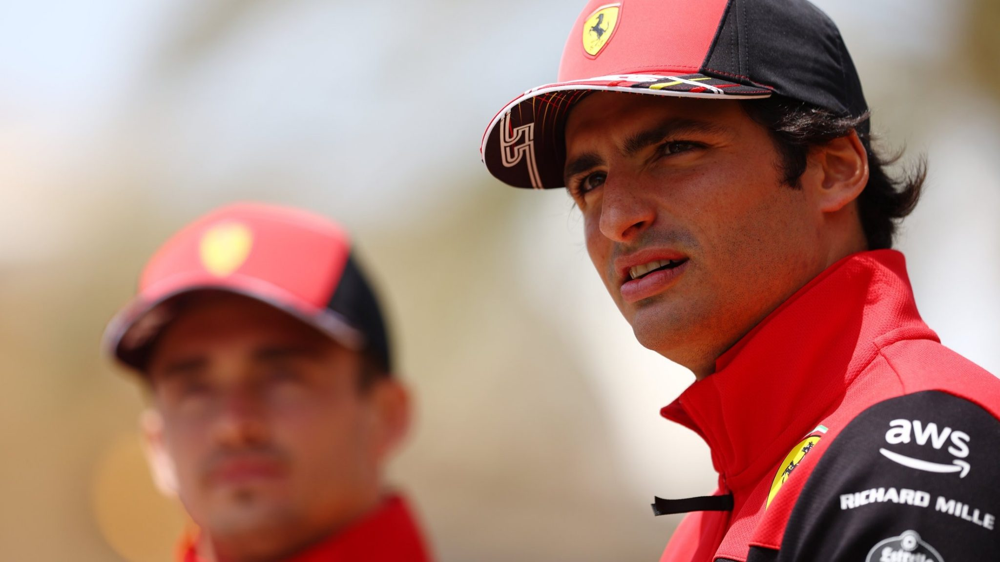
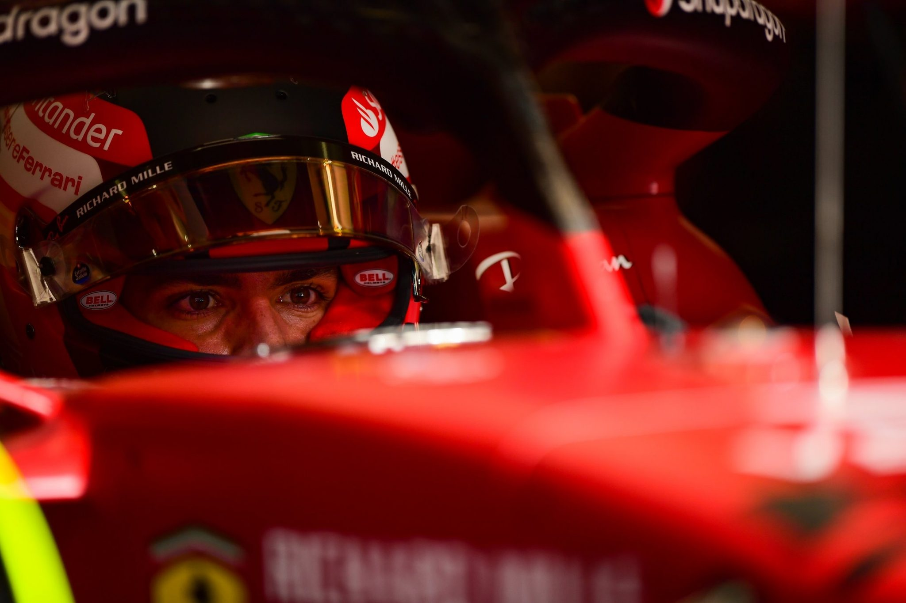

He’s the matador from Madrid racing royalty.
After entering F1’s Bull Ring paired alongside Max Verstappen at Toro Rosso in 2015,
Sainz quickly showed his fighting spirit. A tenacious racer, he puts the car on the edge as he hustles his way through the pack.
No wonder Sainz has earned the nickname Chilli.
But the Spaniard is intelligent as well as instinctive, thinking his way through a race and into the points.
This calm temperament follows him off track where he remains unfazed by the pressures of forging a Grand Prix career with a famous name.
Sainz is the son of double World Rally champion, also his namesake,
and has brought some of Dad’s driving skills to the F1 circuit – junior loves a delicious dose of drift for one.
After following in his famous father’s tyre tracks, Sainz has had big racing boots to fill
first at McLaren where he replaced his childhood hero Fernando Alonso, and now at Ferrari,
in the seat formerly owned by Sebastian Vettel. It is never easy living in the shadow of sporting giants,
but Sainz has shown the drive and disposition to deal with it. Vamos!
  
| Team | Ferrari |
|---|---|
| Country | Spain |
| Podiums | 14 |
| Points | 748.5 |
| Grand Prix entered | 161 |
| World Championships | N/A |
| Highest race finish | 1 (x1) |
| Highest grid position | 1 |
| Date of birth | 01/09/1994 |
| Place of birth | Madrid, Spain |
Biography
He’s the matador from Madrid racing royalty.
After entering F1’s Bull Ring paired alongside Max Verstappen at Toro Rosso in 2015,
Sainz quickly showed his fighting spirit. A tenacious racer, he puts the car on the edge as he hustles his way through the pack.
No wonder Sainz has earned the nickname Chilli.
But the Spaniard is intelligent as well as instinctive, thinking his way through a race and into the points.
This calm temperament follows him off track where he remains unfazed by the pressures of forging a Grand Prix career with a famous name.
Sainz is the son of double World Rally champion, also his namesake,
and has brought some of Dad’s driving skills to the F1 circuit – junior loves a delicious dose of drift for one.
After following in his famous father’s tyre tracks, Sainz has had big racing boots to fill
first at McLaren where he replaced his childhood hero Fernando Alonso, and now at Ferrari,
in the seat formerly owned by Sebastian Vettel. It is never easy living in the shadow of sporting giants,
but Sainz has shown the drive and disposition to deal with it. Vamos!
Gallery
  